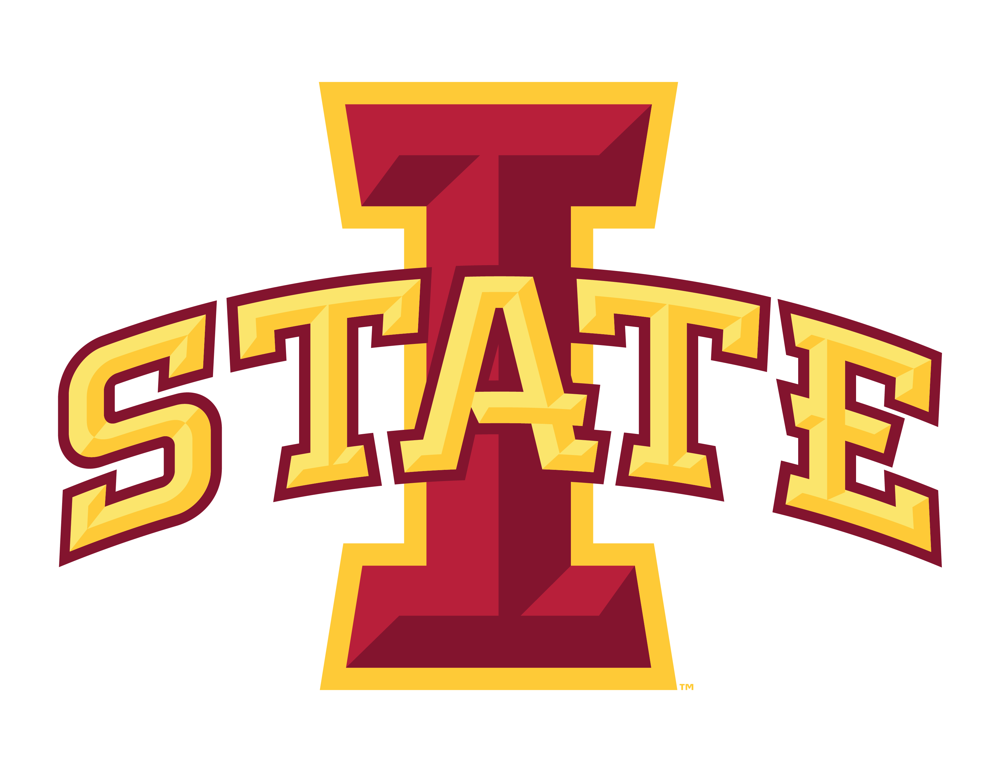

Postdoctoral Researcher, August 2023 - October 2025
Supervisors: Murali Emani and Venkatram Vishwanath
My contributions are as follows:
LangVision-LoRA-NAS
Developed a framework to integrate Neural Architecture Search (NAS) with LoRA to optimize Vision Language Models for variable-rank adaptation
Developed a one-shot gradient-based search method leveraging weight sharing for LoRA adapters
Extensive experiments of LangVision-LoRA-NAS on LLaMA-3.2-11B-Vision-Instruct model demonstrated reduction in LoRA parameters across diverse open-source downstream datasets, with negligible loss in perplexity
PagedEviction
Developed PagedEviction, a novel block-wise structured KV cache eviction method to enhance the efficiency of vLLM's PagedAttention mechanism
The goal of the method is to evict equal number of tokens in each KV Cache block to preserve the integrity of vLLM's block structure after eviction
Proposed a proxy score as a substitute for the cumulative attention score, which is derived solely from the accumulated static KV cache, eliminating the need for maintaining a running sum
Demonstrate the effectiveness of the proposed approach on the LongBench benchmark suite, utilizing the LLaMA-3.1-8B model
LLM-Inference-Bench
Developed LLM-Inference-Bench, a comprehensive benchmarking suite to evaluate the hardware inference performance of LLMs
Analyzed diverse hardware platforms, including GPUs from Nvidia and AMD and specialized AI accelerators, Intel Habana and SambaNova
Our evaluation includes several LLM inference frameworks (vLLM, TensorRT-LLM, llama.cpp, Deepspeed-MII) and models from LLaMA, Mistral, and Qwen families with 7B and 70B parameters
Our benchmarking results reveal the strengths and limitations of various models, hardware platforms, and inference frameworks
Provided an interactive dashboard to help identify configurations for optimal performance for a given hardware platform
WActiGrad Pruning
Developed a structured pruning algorithm, Weight Activation and Gradient (WActiGrad), to obtain smaller LLMs from large pre-trained models
Investigated the effects of different pruning granularity and identified the challenges in applying these techniques across different parts of the transformer
Applied WActiGrad method on LLaMA (7B and 13B), LLaMA-2 (7B and 13B), and Mistral-7B models across several language benchmarks
Our approach can prune close to 20% of the original model size without significantly compromising the model validation accuracy
Evaluated the hardware performance of our structurally pruned LLMs on different AI accelerators such as Nvidia A100 GPU, Groq LPU, Cerebras CS-2, and Graphcore Bow systems
 Iowa State Univeristy
Graduate Research Assistant, August 2017 - August 2023
Supervisor: Dr. Arun K. Somani
My contributions are as follows:
Accelerator, Architecture and Mixed Precision Quantization Co-Search
Developed a Fast Differentiable Hardware-aware Mixed Precision Quantization Search method to find optimal precision for each weight and activation matrix in a neural network
Developed a Joint Differentiable hardware-aware Architecture and Mixed Precision Quantization Co-search to jointly find the neural architecture parameters (kernel and filter size) and precision of each weight and activation tensor
Developed a Joint Accelerator, Architecture, and Precision triple co-search to find most optimal combination of accelerator size, precision and neural architecture size
Demonstrated the effectiveness of our proposed methods targeting Bitfusion accelerator by searching mixed precision models on MobilenetV2 model
Achieved better accuracy and latency trade-off models than the manually designed and previously proposed search methods
ConVision Benchmark
Developed ConVision Benchmark, a comprehensive and highly-scalable PyTorch framework to standardize the implementation and
evaluation of state-of-the-art CNN and ViT models
Implemented the following CNN model families: AlexNet, ConvNext, DenseNet, EfficientNet, GhostNet, Inception, MNASNet,
Mobilenet, NFNet, RegNet, ResNet, Shufflenet, Squeezenet, Vgg
Implemented the following ViT model families: BoTNet, CCT, CaiT, CrossFormer, CrossViT, CvT, DeepViT, EdgeNeXt,
Efficientformer, FocalTransformer, GC-ViT, LVT, LeViT, MLP-Mixer, Max-ViT, MobileFormer, PVT, PiT, PoolFormer, Region-ViT,
SepViT, Swin, T2T, TNT, Twins, VAN
Our methodology includes rigorous performance evaluations, highlighting metrics such as accuracy, precision, recall,
F1 score, and computational efficiency (FLOPs, MACs, CPU, and GPU latency).
Array Aware Neural Architecture Search
Designed Neural Architecture Search method to automatically design efficient CNNs for a fixed-size systolic-array neural
network accelerator
The novel contribution include designing the CNN search space based on the underlying hardware array dimension for optimal
hardware performance
The proposed NAS methods on the CIFAR-10 dataset produced similar accuracy as the baseline models while saving a
substantial number of cycles on the systolic array
Hardware Dimension Aware Pruning (HDAP)
Developed HDAP method, speecific to systolic array-based accelerators, multi-core CPUs, and Tensor Core GPUs, which considers the underlying dimension of the hardware for pruning
Our HDAP algorithm prunes number of nodes/filters in each layer based on the size of the underlying hardware in every pruning iteration
Our method Achieved an average speedup of 3.2x on Turing Tensor Cores, whereas the baseline achieves only 1.5x on CNN benchmarks
Our HDAP method attains an average speedup of 4.2x on the selected CNN benchmarks on the Eyeriss accelerator, whereas the baseline method attains only 1.6x
Fault based and Array size based Pruning
Developed Fault and Array size based Pruning (FPAP) algorithm, a co-deign method to bypass faults and remove the
internal redundancy concurrently for efficient inference
Compared our method with different pruning methods under different fault scenarios (random, row and column faults)
and array sizes
Our method achieved a mean speedup of 4.2x, where the baselines achieved 1.6x on ConvNet, NiN, AlexNet, and VGG16 models over
Eyeriss under random faults
Argonne National Laboratory
Research Intern, September 2021 - November 2021
Supervisors: Murali Emani and Venkatram Vishwanath
Project Title: Searching Sparse and Mixed Precision Quantized Neural Networks for A100 Tensor Cores
Developed Mixed Sparse and Precision Search (MSPS) method to search for the optimal weight matrix type (sparse or dense)
and precision combination for every layer of the pretrained model, such as ResNet50
The MSPS method outperformed the manually designed Int8 ResNet50 network in terms of accuracy and latency
Extended the MSPS method and developed the Architecture, Sparsity, and Precision Search (ASPS) algorithm to find better
model hyperparameters, matrix type, and precision in a single loop
The best ASPS model is 1.1x faster and 0.57% more accurate than the baseline sparse-only Integer 8 ResNet50 model
Intel Corporation
Deep Learning Research Intern, June 2020 - December 2020
Supervisor: Sreeni Kothandaraman
Project Title: Searching Architecture and Precision for U-net based Image Restoration Tasks
Designed a Weight sharing Neural Architecture Search method to optimize Unet CNN architecture for image restoration tasks, specifically Super Resolution and Denoising
Designed Operation Search to identify optimal sequences of operations (convolutions and pooling) within the U-net model, focusing on both Down and Up sampling operations
Conducted experiments using the DIV2K and BSD400 datasets for Super Resolution and Denoising tasks, respectively
The searhched Unet model outperformed the baseline Unet model and the mixed precision Unet model achieves better PSNR than uniform quantization
 Argonne National Laboratory
Argonne National Laboratory Intel Corporation
Intel Corporation